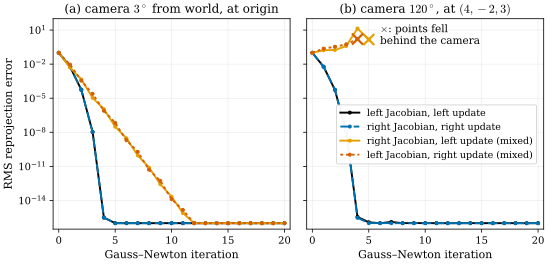
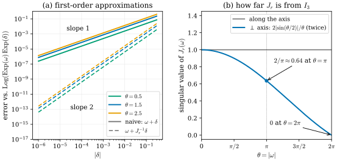
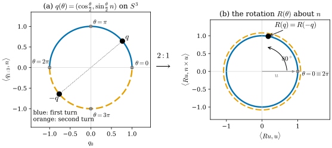

28.2 Calculus on Lie Groups
Goals
- pose를 오른쪽에서 곱하는 perturbation과 왼쪽에서 곱하는 perturbation을 구별하고, 각각이 어느 frame의 축으로 돌리는지와 둘이 \(\mathrm{Ad}\)로 바뀐다는 것을 설명할 수 있다. 둘을 섞으면 Gauss–Newton이 무너지는 이유를 말할 수 있다.
- \(Rp\)와 \(Tx\)의 기본 Jacobian을 유도하고, reprojection residual의 Jacobian을 투영의 differential \(D\varphi\)와 합성해 쓸 수 있다.
- \(\mathrm{Exp}\)의 right/left Jacobian \(J_r, J_l\)의 닫힌 꼴과 BCH 공식의 1차 항을 쓰고, rotation vector에 더하기와 회전을 합성하기의 차이를 잴 수 있다.
- unit quaternion의 double cover \(S^3 \to \mathrm{SO}(3)\)를 설명하고, 4-parameter 정규화, 3-parameter retraction, 전역 rotation vector라는 세 update 방식을 비교하며, Ceres·GTSAM·Sophus가 무엇을 쓰는지 정확히 말할 수 있다.
Prerequisites
- Section 28.1: hat과 twist (28.1.2), \(\mathrm{SE}(3)\)의 \(\exp\)와 \(V\) (28.1.4), adjoint (28.1.8), frame 첨자 규약(Conventions)
- Definition 0.6.5: differential은 chart에서 Jacobian matrix이고 chain rule로 합성된다. Section 0.8의 상자 “Riemannian optimization”: retraction
- (29.2.5): quaternion에서 rotation matrix. Proposition 29.5.2: \(q/\abs{q}\)를 통과한 gradient, (29.5.6): \(\mathrm{SO}(3)\) 위의 retraction update
- 투영 \(\varphi\)와 그 Jacobian matrix: (29.3.3). 그 rank와 kernel(fiber = ray), 일반 카메라 모델은 Section 27.1의 (27.1.2)
Motivation
Section 28.1의 끝에서 \(\mathrm{Exp}(\xi)T = T\,\mathrm{Exp}(\mathrm{Ad}_{T^{-1}}\xi)\)를 보았다. pose \(T\)를 조금 바꾸는 방법이 왼쪽에서 곱하기와 오른쪽에서 곱하기 둘이라는 뜻이다. 이 절은 그 두 방법 위에서 미분한다.
bundle adjustment나 PnP의 Gauss–Newton은 residual \(r(T)\)의 Jacobian “\(\partial r/\partial T\)”를 요구한다. 그러나 \(T\)는 \(\R^6\)의 점이 아니다. 행렬 성분 12개로 미분하면 \(R^{\mathsf T}R = I_3\)이라는 제약을 벗어나는 방향까지 섞인다. manifold 위의 미분은 chart에서 한다는 것이 Definition 0.6.5의 생각이었고, 최적화에서는 현재 추정 근처의 chart를 매번 새로 잡는다(Section 0.8의 retraction). 질문은 넷이다.
- 현재 pose \(T\) 근처의 chart로 \(\delta \mapsto T\,\mathrm{Exp}(\delta)\)와 \(\delta \mapsto \mathrm{Exp}(\delta)\,T\) 가운데 무엇을 쓰는가? 둘은 어떻게 다르고, 섞으면 무엇이 깨지는가?
- 회전된 점, 변환된 점, 투영된 점의 Jacobian은 무엇인가?
- rotation vector \(\omega\) 자체를 parameter로 두고 더하면(\(\omega \leftarrow \omega + \delta\)) chart로 update하는 것과 무엇이 다른가?
- quaternion으로 회전을 저장할 때 update하는 방법들은 기하적으로 무엇이고, 라이브러리들은 실제로 무엇을 하는가?
Left and Right Perturbations
Definition 28.2.1 (right and left perturbation). \(G\)가 \(\mathrm{SO}(3)\), \(\mathrm{SE}(3)\), \(\mathrm{Sim}(3)\) 가운데 하나이고 \(X \in G\)라 하자. \(\delta \in \R^n\)(\(n = \dim G\))에 대해
- right perturbation: \(\delta \mapsto X\,\mathrm{Exp}(\delta)\)
- left perturbation: \(\delta \mapsto \mathrm{Exp}(\delta)\,X\)
둘 다 \(\delta = 0\) 근처에서 \(X\)의 neighborhood로 가는 diffeomorphism이고, 따라서 \(X\) 둘레의 chart(의 역)이다. map \(f\colon G \to \R^m\)의 \(X\)에서의 right Jacobian과 left Jacobian을 각각 \(\partial f(X\,\mathrm{Exp}(\delta))/\partial\delta\), \(\partial f(\mathrm{Exp}(\delta)X)/\partial\delta\)(\(\delta = 0\))로 정한다 [Sola18].
\(\mathrm{Exp}\)는 \(0\) 근처에서 diffeomorphism이고(Proposition 28.1.6의 \(\log\)가 그 역), \(X\)를 곱하는 map은 group 위의 diffeomorphism이므로 두 map 모두 chart의 역이 된다. 두 좌표 사이의 관계는 (28.1.8)에서 바로 나온다.
\(\mathrm{SO}(3)\)에서는 \(\mathrm{Ad}_R = R\)이므로 \(\delta_l = R\delta_r\)이다 [Forster17]. 기하적으로는 이렇다. \(X = T_{ab}\)가 frame \(b\)의 좌표를 frame \(a\)의 좌표로 바꾼다면, 오른쪽의 \(\mathrm{Exp}(\delta)\)는 \(T_{ab}\)보다 먼저 작용하므로 frame \(b\)의 좌표로 쓴 움직임이고, 왼쪽의 \(\mathrm{Exp}(\delta)\)는 frame \(a\)의 좌표로 쓴 움직임이다. 흔히 앞의 것을 local(또는 body) perturbation, 뒤의 것을 global perturbation이라 부른다. 그런데 어느 쪽이 camera frame인지는 pose를 어느 방향으로 저장했느냐에 달려 있다.
| 저장한 pose | right: \(T\,\mathrm{Exp}(\xi)\) | left: \(\mathrm{Exp}(\xi)\,T\) |
|---|---|---|
| \(T_{wc}\) (NeRF, nerfstudio) | camera frame의 축과 원점으로 | world frame의 축과 원점으로 |
| \(T_{cw}\) (COLMAP, g2o, 3DGS) | world frame의 축과 원점으로 | camera frame의 축과 원점으로 |
![두 패널. 왼쪽 (a) view along the optical axis는 원래 카메라의 뒤에서 광축을 따라 본 2D 그림이다. 가로축은 원래 카메라의 x_c(오른쪽), 세로축은 −y_c(위쪽)다. 검은 직사각형(원래 카메라의 image)과, 같은 중심 둘레로 시계 방향으로 0.6 rad 돌아간 파란 직사각형이 겹쳐 있다. 각 직사각형의 위쪽 변에 작은 삼각형이 있다. 가운데의 ⊗ 표시는 지면 안쪽으로 향하는 광축 z_c이고, 그곳에서 검정과 파랑의 x_c, y_c 화살표가 나온다. 위쪽에 'roll 0.6 rad about z_c'라는 파란 곡선 화살표가 있다. 오른쪽 (b)는 world xy 평면의 top view다. 원점 O에 검은 점이 있고, (3, 0)에 검정·파랑 frustum이 거의 겹쳐 원점 쪽을 향한다. 반지름 3인 회색 점선 원 위의 (2.48, 1.69)에 주황 frustum이 있고, (3, 0)에서 그곳으로 '0.6 rad'라 적힌 주황 곡선 화살표가 있다. 범례: original, right T_wc Exp(ξ), left Exp(ξ) T_wc.](figures/fig-28-2-1-left-right.svg)
Figure 28.2.1의 (a)에서 검은 직사각형과 파란 직사각형을 비교하자. 두 직사각형은 중심 \(\otimes\)가 같고, 파란 쪽이 그 중심 둘레로 0.6 rad 돌아 있다. 위쪽을 표시한 삼각형과 \(x_c\), \(y_c\) 화살표가 함께 돈 것이 보인다. 오른쪽 perturbation은 camera frame의 셋째 축, 곧 광축 둘레로 돌리기 때문이다. 광축 자체는 움직이지 않으므로 카메라가 보는 방향과 위치는 그대로이고, image만 roll한다. (b)의 top view에서는 파랑이 검정과 거의 겹친다. 반면 주황 카메라는 (b)에서 반지름 3인 원을 따라 0.6 rad 옮겨 갔다. 왼쪽 perturbation의 셋째 축은 world \(z\)축이고, 그 축은 world 원점을 지나기 때문이다(Figure 28.1.4와 같은 이유로, 회전의 중심이 어디냐에 따라 같은 \(\omega\)가 다른 움직임이 된다).
Basic Jacobians
Proposition 28.2.2 (Jacobians of a transformed point). \(R \in \mathrm{SO}(3)\), \(T = (R, t) \in \mathrm{SE}(3)\), \(p, x \in \R^3\)에 대해(미분은 모두 \(\delta = 0\), \(\xi = 0\)에서)
이고 \(\partial(Tx)/\partial x = R\)이다. 여기서 \(Tx = Rx + t\)이고, \(\xi = (v, \omega)\)의 순서로 \(3 \times 6\) 행렬을 썼다.
Derivation. Rodrigues formula에서 \(\mathrm{Exp}(\delta) = I_3 + [\delta]_\times + O(\abs{\delta}^2)\)이므로 \(\mathrm{Exp}(\delta)p = p + \delta \times p + O(\abs{\delta}^2) = p - [p]_\times\delta + O(\abs{\delta}^2)\)이다. 앞에 \(R\)을 곱하면 첫째 식, \(p\) 대신 \(Rp\)를 넣으면 둘째 식이다. \(\mathrm{SE}(3)\)에서는 (28.1.3)에 의해 \(\mathrm{Exp}(\xi)x = x + \omega \times x + v + O(\abs{\xi}^2)\)이므로 \(\partial(\mathrm{Exp}(\xi)x)/\partial\xi = (I_3\ \ {-[x]_\times})\)이고, 같은 방식으로 나머지 둘이 나온다. 두 줄의 결과는 (28.2.1)로 이어진다: \(R(I_3\ \ {-[x]_\times}) = (I_3\ \ {-[Tx]_\times})\,\mathrm{Ad}_T\)(verify).
reprojection residual은 이것과 투영의 differential을 chain rule((0.6.5))로 합성한 것이다. camera \(i\)의 pose를 \(T_i = T_{cw}\)로 두고, 점 \(X_j\)의 camera 좌표를 \(x_c = T_iX_j = (x, y, z)\)라 하자. residual \(r_{ij} = \varphi(T_iX_j) - u_{ij}\)에서, camera frame의 perturbation(\(T_{cw}\)의 왼쪽, g2o와 [Strasdat10]의 규약)을 쓰면
이다. 정규화 좌표의 pinhole \(\varphi(x, y, z) = (x/z, y/z)\)에서는 \(D\varphi = \frac1z\begin{pmatrix} 1 & 0 & -x/z \\ 0 & 1 & -y/z \end{pmatrix}\)((29.3.3)에서 \(f_x = f_y = 1\))이고, 곱을 풀어 쓰면
이다. 두 블록을 이어 붙인 것이 \(2 \times 6\) 행렬 \(\partial r_{ij}/\partial\xi_i\)이고, g2o의 EdgeSE3ProjectXYZ::linearizeOplus()에 적힌 \(2 \times 6\) 행렬과 같다. 다만 g2o는 residual을 “관측 \(-\) 예측”으로 정의해 부호가 반대이고, 열의 순서가 \((\omega, v)\)이며, 초점거리 \(f_x, f_y\)가 행에 곱해져 있다(verify에서 열을 바꿔 대조했다). 일반 카메라 모델(fisheye, distortion)에서는 \(D\varphi\) 자리에 그 모델의 differential이 들어갈 뿐 \((I_3\ \ {-[x_c]_\times})\)는 그대로다. 투영 쪽의 기하는 Section 27.1이 다룬다. world 좌표의 점에 대한 Jacobian \(D\varphi(x_c)R_i\)는 (27.1.3)의 \(J_{g(x)}R\)와 같은 것이다.
Verification: verify/v-28-2-calculus-on-lie-groups.py
right와 left는 같은 tangent space의 두 좌표일 뿐이므로, 일관되게 쓰기만 하면 결과가 같다. 실제로 이 두 chart로 구한 Gauss–Newton step은 정확히 같은 점을 준다. \(J_R = J_L\,\mathrm{Ad}_T\)이면 \(J_R\delta_R = -r\)의 최소제곱해는 \(\delta_R = \mathrm{Ad}_T^{-1}\delta_L\)이고, (28.2.1)에 의해 \(T\,\mathrm{Exp}(\delta_R) = \mathrm{Exp}(\delta_L)\,T\)이다(Exercise 28.2.5). 문제는 섞을 때 생긴다.

Figure 28.2.2의 (a)부터 보자. 검정과 파랑은 한 곡선처럼 겹쳐서 2, 3, 4번째 step마다 오차의 지수가 두 배씩 내려간다. 주황과 주홍은 한 step에 대략 20분의 1씩만 줄어드는 직선이다(11 step에 14자리). 그래도 수렴은 한다. 이제 (b)를 보면 같은 코드가 첫 step부터 오차를 키우고, 네다섯 번째 step에 점을 카메라 뒤로 보낸다. 두 패널의 차이는 참 pose뿐이다. 섞인 step은 올바른 step에 \(\mathrm{Ad}_T\) 또는 그 역을 잘못 곱한 것이므로, \(\mathrm{Ad}_T\)가 \(I_6\)에 가까운 (a)에서는 오차가 작다.
The Jacobians of Exp
지금까지는 현재 점 \(X\) 둘레의 chart \(\delta \mapsto X\,\mathrm{Exp}(\delta)\)를 매번 새로 잡았다. 많은 코드는 그 대신 rotation vector \(\omega\) 하나를 전역 parameter로 저장하고 \(\omega \leftarrow \omega + \delta\)로 더한다. Ceres의 bundle_adjuster 예제의 기본 설정(카메라마다 angle-axis 3개를 그대로 최적화한다), Grassia의 exponential map parametrization [Grassia98], nerfstudio의 pose 보정 6-vector(Section 28.3)가 그렇다. 더하기와 합성의 차이를 재는 것이 \(\mathrm{Exp}\)의 Jacobian이다.
Definition 28.2.3 (right and left Jacobian of Exp). \(\omega \in \R^3\)에서 \(\mathrm{Exp}\)의 right Jacobian \(J_r(\omega)\)와 left Jacobian \(J_l(\omega)\)는 모든 \(\delta\)에 대해
를 만족하는 \(3 \times 3\) 행렬이다. 곧 \(J_r(\omega)\)는 \(\mathrm{Exp}\)의 differential을 Definition 28.2.1의 right perturbation 좌표로 쓴 것이다 [Sola18], [Forster17].
Proposition 28.2.4 (closed forms and first-order BCH). \(\theta = \abs{\omega}\), \(\Omega = [\omega]_\times\)일 때
이고(\(V\)는 (28.1.4)), \(J_l(\omega) = \mathrm{Exp}(\omega)\,J_r(\omega)\)이다. 또 Baker–Campbell–Hausdorff(BCH) 공식의 1차 항으로
이다(\(\abs{\omega} \lt \pi\)) [Forster17, (7)–(9)], [Sola18].
Derivation. 행렬 지수의 differential에 대한 표준 공식 \(\frac{d}{d\varepsilon}\big|_0 \exp(A + \varepsilon B) = \exp(A)\int_0^1 \exp(-uA)\,B\,\exp(uA)\,du\)에 \(A = \Omega\), \(B = [\delta]_\times\)를 넣는다. (28.1.8)의 \(\mathrm{SO}(3)\)판에 의해 \(\exp(-u\Omega)[\delta]_\times\exp(u\Omega) = [\mathrm{Exp}(-u\omega)\delta]_\times\)이므로 \(J_r(\omega) = \int_0^1 \exp(-u\Omega)\,du\)이다. 이것은 Proposition 28.1.3의 \(V = \int_0^1\exp(u\Omega)\,du\)에서 \(\Omega\)를 \(-\Omega\)로 바꾼 것이므로 첫 식이 나오고, \(J_l = J_r(-\omega) = V\)이다. \(\Omega^{\mathsf T} = -\Omega\)이므로 \(J_r^{\mathsf T} = J_r(-\omega)\)이다. (28.2.5)의 두 꼴을 (28.2.1)의 \(\mathrm{SO}(3)\)판 \(\mathrm{Exp}(\omega)\mathrm{Exp}(\delta_r) = \mathrm{Exp}(\mathrm{Exp}(\omega)\delta_r)\mathrm{Exp}(\omega)\)와 비교하면 \(J_l = \mathrm{Exp}(\omega)J_r\)이다. BCH 식은 (28.2.5)의 양변에 \(\mathrm{Log}\)를 취해 \(\delta\)를 \(J_r^{-1}\delta\)로 바꾼 것이다.

Figure 28.2.3의 (a)에서 실선과 점선의 기울기를 비교하자. \(\omega + \delta\)는 1차에서 이미 틀리고, 그 크기는 \((J_r^{-1} - I_3)\delta\), 곧 대략 \(\tfrac12\omega \times \delta\)이다. 그래서 \(\theta\)가 큰 주황 실선이 가장 높다. \(J_r^{-1}\)을 곱한 점선은 1차 오차가 사라져 기울기가 2다. (b)는 그 차이의 크기를 전체 범위에서 보인다. \(\abs{\omega} \le \pi\)에서는 \(J_r\)의 singular value가 \([0.64, 1]\)에 있어 잘 조건화되어 있고, \(2\pi\)에 가까워지면 \(0\)으로 간다.
gradient로 옮기면 이렇다. loss \(L\)을 전역 \(\omega\)로 미분한 것과 right perturbation \(\delta\)로 미분한 것은 \(\partial L/\partial\omega = J_r(\omega)^{\mathsf T}\,\partial L/\partial\delta\)의 관계다(chain rule과 (28.2.5)). 전역 \(\omega\)를 쓰는 optimizer는 그 \(J_r^{\mathsf T}\)를 알든 모르든 품고 있다. \(\omega\)가 작은 동안(초기값 \(0\)에서 출발한 pose 보정)은 \(J_r \approx I_3\)이어서 거의 차이가 없지만, 큰 회전을 전역 \(\omega\)로 오래 최적화하면 \(\abs{\omega}\)가 \(2\pi\)에 가까워질 때 조건수가 나빠진다. 같은 \(J_r^{-1}\)은 pose graph의 residual \(\mathrm{Log}(Z^{-1}X)\)를 미분할 때도 나오고, IMU preintegration은 이 Jacobian 위에 세워져 있다 [Forster17].
Verification: verify/v-28-2-calculus-on-lie-groups.py
Unit Quaternions and the Double Cover
quaternion은 회전을 수 4개로 저장한다. COLMAP, 3DGS, Ceres, Eigen이 모두 쓴다. 그 기하는 \(S^3\)과 \(\mathrm{SO}(3)\) 사이의 map 하나로 요약된다.
Proposition 28.2.5 (the double cover \(S^3 \to \mathrm{SO}(3)\)). unit quaternion \(q\)에 (29.2.5)의 \(R(q)\)를 대응시키는 map \(S^3 \to \mathrm{SO}(3)\)는 smooth하고 surjective이며, \(R(q) = R(q')\)일 필요충분조건은 \(q' = \pm q\)이다. 회전각 \(\theta\), 축 \(n\)의 회전에는
이 대응한다. 둘째 식의 \(d\)는 Remark 0.8.4의 거리(\(R_1^{\mathsf T}R_2\)의 회전각)다. 이 map은 2대1 local diffeomorphism이고, 그래서 \(\mathrm{SO}(3) \cong S^3/\{\pm 1\} = \RP^3\)이다(Section 0.6).
Derivation. (29.2.5)는 \(q\)의 이차식이므로 \(R(-q) = R(q)\)이고, \(q = (\cos\frac\theta2, \sin\frac\theta2 n)\)을 넣으면 \(2\cos\frac\theta2\sin\frac\theta2 = \sin\theta\), \(2\sin^2\frac\theta2 = 1 - \cos\theta\)이므로 Rodrigues formula가 된다. 모든 회전은 어떤 \(\theta, n\)의 \(\mathrm{Exp}(\theta n)\)이므로 surjective다. \(R(q_1)^{\mathsf T}R(q_2) = R(\bar q_1 q_2)\)이고 \(\bar q_1q_2\)의 scalar 부분이 \(\inner{q_1}{q_2} = \cos\frac{\theta_{12}}{2}\)이므로(부호는 \(\pm\)의 선택) 둘째 식이 나온다.

Figure 28.2.4의 (a)에서 파란 반원을 따라가 보자. \(\theta = 0\)에서 출발해 \(\theta = \pi\)(\(180^\circ\) 회전)에서 꼭대기 \((0, 1)\)에 닿고, \(\theta = 2\pi\)에서 \(q = -1\)에 도착한다. 그동안 (b)의 점은 원을 한 바퀴 다 돌아 출발점으로 돌아왔다. quaternion의 세계에서는 아직 반 바퀴다. 그래서 \(S^3\)에서 두 quaternion 사이의 각은 회전각의 절반이고, “가까운” 회전도 부호를 잘못 고르면 \(S^3\)에서는 멀리 떨어진 두 점으로 보인다. 보간과 평균에서 이것이 문제가 된다(Section 28.4).
Three Ways to Update a Rotation
회전 parameter를 update하는 방법은 크게 셋이다. Ceres의 bundle_adjuster 예제는 세 방법을 모두 옵션으로 두고 있어 비교하기 좋다.
- (a) quaternion 4개를 그대로, 정규화해서 쓰기. 3DGS가 이렇게 한다((29.2.4)). Ceres 예제의
--use_quaternions(manifold 없이)도 같다. 이때 cost는QuaternionRotatePoint로 점을 돌리는데, 이 함수는 \(q\)를 먼저 \(\abs{q}\)로 나눈다(예제 코드의 주석이 바로 이 경우를 위해서라고 적는다). 4차원 parameter가 3차원 manifold로 가는 submersion을 거치므로, loss는 반직선 방향 \(q\)를 보지 못한다. 따라서 residual의 Jacobian은 rank가 많아야 3이고 \(J^{\mathsf T}J\)는 singular다(Exercise 28.2.4). Gauss–Newton의 normal equation을 그대로 풀 수 없고, LM의 damping이나 pseudo-inverse가 그 방향을 막아 준다. gradient descent에서는 \(\abs{q}\)가 저절로 커진다(Proposition 29.5.2). - (b) 3개의 tangent 좌표와 retraction. Ceres 예제의
--use_quaternions --use_manifolds는QuaternionManifold를 쓴다. 공식 코드(internal/ceres/manifold.cc)의Plus는 \[ x \boxplus \delta = \big(\cos\abs{\delta},\ \sin\abs{\delta}\,\tfrac{\delta}{\abs{\delta}}\big) \otimes x \] 이다. quaternion을 왼쪽에서 곱하고(global frame), 그 quaternion의 반각이 \(\abs{\delta}\)이므로 회전각은 \(2\abs{\delta}\)다. \(S^3\)의 말로 하면 이것은 \(x\)에서 출발하는 great circle을 길이 \(\abs{\delta}\)만큼 따라가는 정확한 Riemannian \(\exp\)이다.EigenQuaternionManifold는 메모리 배치만 \((x, y, z, w)\)이고 기하는 같다. 최소 parametrization이라 gauge 방향이 없다. - (c) 전역 rotation vector에 더하기. Ceres 예제의 기본값은 angle-axis 3개를 manifold 없이 더한다. chart \(\mathrm{Log}\)의 역 \(\mathrm{Exp}\)를 전역 좌표로 쓰는 것과 같다. iterate가 \(\abs{\omega} \gt \pi\)로 넘어가면 같은 회전을 더 짧은 \(\omega - 2\pi\hat\omega\)로도 쓸 수 있어 parameter가 주 ball \(\abs{\omega} \le \pi\)를 벗어나고, \(\abs{\omega} = 2\pi\)에서는 \(\mathrm{Exp}\)의 differential이 퇴화한다(Figure 28.2.3의 (b)). update와 tangent step의 차이는 \(J_r\)이다.
Retractions and Minimal Parametrizations
세 방법을 한 원리로 정리하자. manifold \(M\) 위의 retraction은 각 점 \(x\)에서 smooth map \(\mathrm{retr}_x\colon T_xM \to M\)으로, \(\mathrm{retr}_x(0) = x\)이고 \(0\)에서의 differential이 항등인 것이다 [AMS], [Boumal]. Tour의 정의(Section 0.8)를 그대로 쓴 것이다. 최적화는 매 step마다 \(f \circ \mathrm{retr}_x\)라는 \(\R^n\) 위의 함수를 \(0\)에서 linearization하고, 그 해 \(\delta\)를 \(\mathrm{retr}_x(\delta)\)로 manifold에 돌려 놓는다.
\(\mathrm{SO}(3)\)의 retraction은 여럿이다. \(R\,\mathrm{Exp}(\delta)\)와 \(\mathrm{Exp}(\delta)R\)(이 절의 두 perturbation), GTSAM이 옵션으로 두는 Cayley 변환 \(R\,(I_3 - \tfrac12[\delta]_\times)^{-1}(I_3 + \tfrac12[\delta]_\times)\), \(R(I_3 + [\delta]_\times)\)를 SVD로 가장 가까운 회전에 projection하는 것, quaternion \(q + \tfrac12 q \otimes (0, \delta)\)를 정규화하는 것이 모두 그렇다. 정의상 1차까지는 같고, 이 예들은 실제로 2차까지 같다. \(R\,\mathrm{Exp}(\delta)\)와 뒤의 세 retraction은 모두 \(R\)의 오른쪽에 \(\delta\) 축 둘레의 회전을 곱하고, 회전각만 다르다. \(\mathrm{Exp}\)는 \(\abs{\delta}\), Cayley와 quaternion 정규화는 \(2\arctan(\abs{\delta}/2)\), SVD projection은 \(\arctan\abs{\delta}\)만큼 돌린다(\(I_3 + [\delta]_\times\)가 축에 수직인 평면에서 복소수 \(1 + i\abs{\delta}\)를 곱하는 것과 같기 때문이다). 그래서 \(\abs{\delta} = 0.1\)에서 \(R\,\mathrm{Exp}(\delta)\)와의 각 차이는 Cayley와 quaternion 정규화가 \(\abs{\delta}^3/12 \approx 8.3 \times 10^{-5}\), SVD projection이 \(\abs{\delta}^3/3 \approx 3.3 \times 10^{-4}\)이고, \(\abs{\delta}\)를 10배 줄이면 1000배 줄어든다.
retraction의 선택은 iterate의 궤적을 바꾸지만 답은 바꾸지 않는다. \(f\)의 critical point는 \(d(f \circ \mathrm{retr}_x)_0 = df_x \circ d(\mathrm{retr}_x)_0 = df_x\)이므로 어느 retraction으로 보아도 같은 점이다. essential matrix를 추정할 때 essential manifold 위에서 update하는 것도 같은 원리다(Section 27.3). 라이브러리는 계산이 싼 retraction을 고른다(GTSAM의 Cayley 옵션, [Forster17]가 \(\mathrm{SE}(3)\)의 \(\exp\) 대신 쓰는 \((R, p) \mapsto (R\,\mathrm{Exp}(\delta_\omega),\ p + R\,\delta_p)\). 논문 식 (21)을 이 장의 기호로 쓴 것이다). 이 절의 결론은 둘이다. 첫째, retraction은 마음대로 골라도 되지만 Jacobian은 그 retraction의 Jacobian이어야 한다(Figure 28.2.2). 둘째, 최소 parametrization(3개)은 gauge 방향이 없고, 과잉 parametrization(quaternion 4개)은 \(J^{\mathsf T}J\)에 null space를 만든다. 다음 절에서는 이 null space가 장면 전체의 규모에서 다시 나타난다.
Summary
- pose 근처의 chart는 right perturbation \(X\,\mathrm{Exp}(\delta)\)와 left perturbation \(\mathrm{Exp}(\delta)X\) 둘이고, \(\delta_l = \mathrm{Ad}_X\delta_r\)이다 (28.2.1). 어느 쪽이 camera frame인지는 \(T_{cw}\)와 \(T_{wc}\) 가운데 무엇을 저장했느냐에 달렸다.
- 기본 Jacobian은 \(-R[p]_\times\), \(-[Rp]_\times\), \(R(I_3\ \ {-[x]_\times})\), \((I_3\ \ {-[Tx]_\times})\)이고 (28.2.2), reprojection Jacobian은 \(D\varphi\)와의 합성이다 (28.2.4). 일관된 left와 right는 같은 GN iterate를 주고, 섞으면 \(\mathrm{Ad}_T\)만큼 틀려 큰 회전에서 발산한다.
- \(J_r, J_l\)은 \(\mathrm{Exp}\)의 differential을 perturbation 좌표로 쓴 것이고 \(J_l = J_r^{\mathsf T} = V\)이다 (28.2.6). 전역 rotation vector에 더하면 \(J_r\)만큼 tangent step과 다르고, \(\abs{\omega} = 2\pi\)에서 퇴화한다.
- \(S^3 \to \mathrm{SO}(3)\)는 2대1이고 quaternion의 각은 회전각의 절반이다. Ceres의
QuaternionManifold는 반각을 왼쪽에서, GTSAM은 전각을 오른쪽에서 곱한다. - retraction은 1차까지 \(\exp\)와 같은 아무 map이어도 되고 critical point를 바꾸지 않는다. 과잉 parametrization은 \(J^{\mathsf T}J\)에 null space를 만든다.
다음 절에서는 이 도구로 bundle adjustment를 manifold 위의 최소제곱으로 쓴다. 카메라 pose와 점 전체가 이루는 product manifold에서, monocular 사진이 끝내 정하지 못하는 7개의 방향이 \(J^{\mathsf T}J\)의 null space로 나타난다. 그 7이 왜 \(\dim\mathrm{Sim}(3)\)인지가 주제다.
Quick check
Exercise 28.2.1 ★ \(R = R_z(90^\circ)\), \(p = (1, 0, 0)\)일 때 \(\partial(R\,\mathrm{Exp}(\delta)p)/\partial\delta\)와 \(\partial(\mathrm{Exp}(\delta)Rp)/\partial\delta\)를 구하여라. 각 행렬의 열은 “\(\delta\)의 각 성분으로 돌렸을 때 점이 움직이는 속도”다. 둘째 행렬의 셋째 열을 그림으로 해석하여라.
Solution
\(Rp = (0, 1, 0)\), \([p]_\times = \begin{pmatrix} 0 & 0 & 0 \\ 0 & 0 & -1 \\ 0 & 1 & 0 \end{pmatrix}\)이고 \(R = \begin{pmatrix} 0 & -1 & 0 \\ 1 & 0 & 0 \\ 0 & 0 & 1 \end{pmatrix}\)이므로 \(-R[p]_\times = \begin{pmatrix} 0 & 0 & -1 \\ 0 & 0 & 0 \\ 0 & -1 & 0 \end{pmatrix}\)이다. \(-[Rp]_\times = -[e_2]_\times = \begin{pmatrix} 0 & 0 & -1 \\ 0 & 0 & 0 \\ 1 & 0 & 0 \end{pmatrix}\)이다. 둘째 행렬의 셋째 열 \((-1, 0, 0)\)은 world \(z\)축 둘레로 돌릴 때 점 \((0, 1, 0)\)이 \(-x\) 방향으로 움직인다는 뜻이다(\(e_3 \times e_2 = -e_1\)). 두 행렬은 첫째 열과 둘째 열이 다르고 셋째 열은 같다. right perturbation의 \(k\)번째 축은 body 축 \(Re_k\)이고 \(-R[p]_\times = -[Rp]_\times R\)이기 때문이다. 여기서는 \(R\)이 \(z\)축 둘레의 회전이라 \(Re_3 = e_3\)이므로 셋째 열만 같다.
Verification: verify/v-28-2-calculus-on-lie-groups.py
Exercise 28.2.2 ★ Figure 28.2.1의 카메라에서 \(\xi_r = (0, 0, 0, 0, 0, 0.6)\)을 오른쪽에 곱한 것과 같은 움직임을 왼쪽 perturbation \(\xi_l\)로 쓰면 무엇인가? \(\xi_l\)의 \(v\)가 \(0\)인 이유는 무엇인가?
Solution
(28.2.1)에서 \(\xi_l = \mathrm{Ad}_{T_{wc}}\xi_r = \big(c \times R\omega_r,\ R\omega_r\big)\)이고 \(R\omega_r = 0.6\,Re_3 = 0.6\,f\)(\(f\)는 광축 방향)이다. \(c = (3, 0, 1.2)\)에서 \(f = -c/\abs{c} = (-0.928, 0, -0.371)\)이므로 \(\omega_l = (-0.557, 0, -0.223)\)이다. 카메라가 world 원점을 바라보므로 \(c\)와 \(f\)가 평행하고 \(c \times \omega_l = 0\)이다. 광축은 world 원점을 지나는 직선이고, 그 직선 둘레의 회전은 world 좌표에서도 원점을 고정한다. 그래서 \(v_l = 0\)이고, 회전축만 world \(z\)가 아니라 광축 방향이다.
Verification: verify/v-28-2-calculus-on-lie-groups.py
Exercise 28.2.3 ★ \(J_r(\omega)\omega = \omega\)임을 보이고 뜻을 말하여라. \(\omega = (0, 0, 2)\), \(\delta = (0, 0, 0.1)\)이면 \(\mathrm{Exp}(\omega + \delta)\)와 \(\mathrm{Exp}(\omega)\mathrm{Exp}(\delta)\)는 같은가?
Solution
\(\Omega\omega = \omega \times \omega = 0\)이므로 (28.2.6)의 \(\Omega\), \(\Omega^2\) 항이 사라져 \(J_r(\omega)\omega = \omega\)이다. 축 방향으로 더하는 것은 같은 축 둘레의 회전각을 늘리는 것이고, 같은 축의 회전은 교환하므로 더하기와 합성이 정확히 같다. 실제로 \(\omega\)와 \(\delta\)가 평행하면 \([\omega]_\times\)와 \([\delta]_\times\)가 교환하므로 \(\mathrm{Exp}(\omega + \delta) = \mathrm{Exp}(\omega)\mathrm{Exp}(\delta)\)이다. 둘 다 \(z\)축 둘레 2.1 rad 회전이다. 차이는 축에 수직인 성분에서만 생긴다(Figure 28.2.3의 (b)에서 축 방향 singular value는 늘 1이다).
Verification: verify/v-28-2-calculus-on-lie-groups.py
Exercise 28.2.4 ★★ \(g(q) = R(q/\abs{q})\,p\)(\(q \in \R^4 \setminus \{0\}\))의 \(3 \times 4\) Jacobian matrix의 kernel에 \(q\)가 있음을 보여라. 방향이 다른 두 점 \(p_1, p_2\)에 대한 Jacobian을 쌓은 \(6 \times 4\) 행렬의 rank가 3인 이유를 설명하여라. 이것을 써서 quaternion 4개로 parametrize한 camera \(N\)개의 bundle adjustment에서 \(J^{\mathsf T}J\)의 rank가 적어도 \(N\)만큼 모자란 이유를 말하여라.
Solution
\(g(cq) = g(q)\)(\(c \gt 0\))이므로 \(c\)로 미분하면 \(Dg(q)\,q = 0\)이다. 한편 \(g\)는 submersion \(q \mapsto q/\abs{q}\)(rank 3), local diffeomorphism \(S^3 \to \mathrm{SO}(3)\)(Proposition 28.2.5), \(R \mapsto Rp\)의 합성이다. 마지막 map의 differential \(\delta \mapsto -R[p]_\times\delta\)는 \(p \ne 0\)이면 rank 2이므로(축이 \(p\)와 평행한 회전은 \(p\)를 움직이지 않는다) 점 하나에 대한 \(Dg\)의 rank는 2이고, 서로 다른 방향의 점이 둘 이상이면 rank가 3이 된다. 어느 경우든 \(q\) 방향은 모든 residual의 Jacobian의 kernel에 있으므로, 카메라마다 \(J\)의 kernel에 독립인 벡터가 하나씩 생겨 \(J^{\mathsf T}J\)의 rank가 적어도 \(N\) 모자란다. 3-parameter QuaternionManifold로 바꾸면 이 결손은 사라진다(verify에서 \(N = 4\)로 확인).
Verification: verify/v-28-2-calculus-on-lie-groups.py
Exercise 28.2.5 ★★ residual \(r(T)\)의 left Jacobian \(J_L\)과 right Jacobian \(J_R\)로 각각 Gauss–Newton step \(\delta_L = -J_L^{+}r\), \(\delta_R = -J_R^{+}r\)를 구하면(\(J^+\)는 full column rank일 때의 pseudo-inverse \((J^{\mathsf T}J)^{-1}J^{\mathsf T}\)), \(\mathrm{Exp}(\delta_L)T = T\,\mathrm{Exp}(\delta_R)\)임을 보여라.
Solution
(28.2.1)에서 \(J_R = J_L A\), \(A = \mathrm{Ad}_T\)(invertible)이다. 그러면 \(J_R^{\mathsf T}J_R = A^{\mathsf T}J_L^{\mathsf T}J_LA\)이므로 \(\delta_R = -(A^{\mathsf T}J_L^{\mathsf T}J_LA)^{-1}A^{\mathsf T}J_L^{\mathsf T}r = -A^{-1}(J_L^{\mathsf T}J_L)^{-1}J_L^{\mathsf T}r = A^{-1}\delta_L\)이다. 다시 (28.2.1)에 의해 \(T\,\mathrm{Exp}(A^{-1}\delta_L) = \mathrm{Exp}(\delta_L)\,T\)이다. Gauss–Newton step은 linear reparametrization에 대해 equivariant이므로, 일관되게만 쓰면 left와 right는 같은 iterate를 준다(Figure 28.2.2에서 검정과 파랑이 겹치는 이유). LM의 damping \(\lambda I\)는 \(A^{\mathsf T}A \ne I\)이면 이 equivariance를 깨므로, LM에서는 두 iterate가 조금 다를 수 있다.
Verification: verify/v-28-2-calculus-on-lie-groups.py